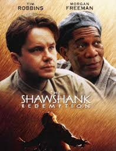
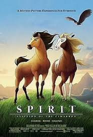
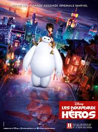

The Green Mile
Genre : American fantasy crime drama film
Release date : 1999
Short Description :
The film, told in a flashback format, tells the story of Paul's life as a death row corrections officer during the U.S. Great Depression, and the supernatural events he witnessed.
The Shawshank Redemption
Genre : American drama film
Release date : September 10, 1994 (Toronto) ; September 23, 1994 (United States)
Short Description :
It tells the story of banker Andy Dufresne (Tim Robbins), who is sentenced to life in Shawshank State Penitentiary for the murder of his wife and her lover, despite his claims of innocence. Over the following two decades, he befriends a fellow prisoner, contraband smuggler Ellis "Red" Redding (Morgan Freeman), and becomes instrumental in a money laundering operation led by the prison warden Samuel Norton (Bob Gunton). William Sadler, Clancy Brown, Gil Bellows, and James Whitmore appear in supporting roles.
Spirit: Stallion of the Cimarron
Genre : American animated adventure film
Release date : May 24, 2002
Short Description :
In the 19th-century American West, a young Kiger Mustang colt, Spirit, is born to a herd of horses. Spirit soon grows into a stallion and assumes the role of leader of the herd, whose duty is to keep the herd safe. Spirit is a courageous leader but has great curiosity. One night, upon spotting a strange light near his herd, the stallion decides to investigate the location, where he finds restrained, docile horses and their human wranglers sleeping around a campfire. They wake up, and seeing him as a magnificent specimen, chase and capture him, taking him to a US cavalry post.
Big Hero 6
Genre : American 3D computer-animated superhero film
Release date :23, 2014 (Tokyo International Film Festival) ; November 7, 2014 (United States)
Short Description :
Hiro Hamada is a 14-year-old robotics genius living in the futuristic city of San Fransokyo who spends much of his free time participating in illegal robot fights. To redirect Hiro, his older brother Tadashi takes him to the research lab at the San Fransokyo Institute of Technology, where Hiro meets Tadashi's friends, GoGo, Wasabi, Honey Lemon, and Fred. Hiro also meets Professor Robert Callaghan, the head of the university's robotics program.